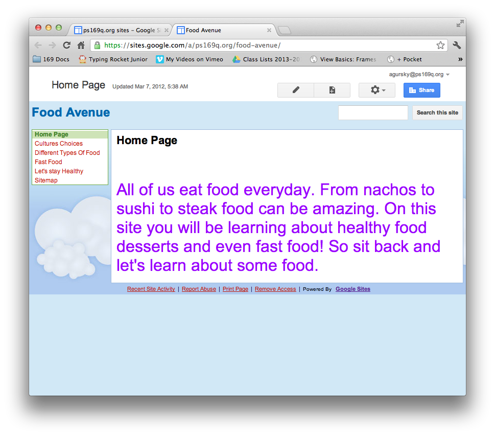
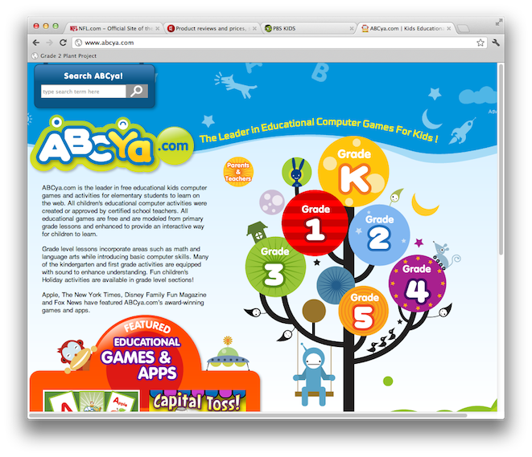
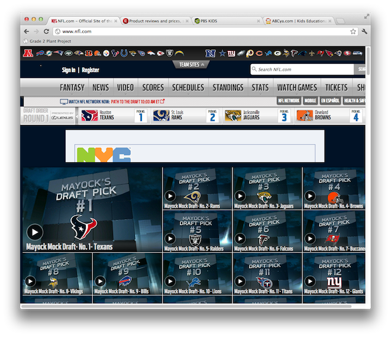
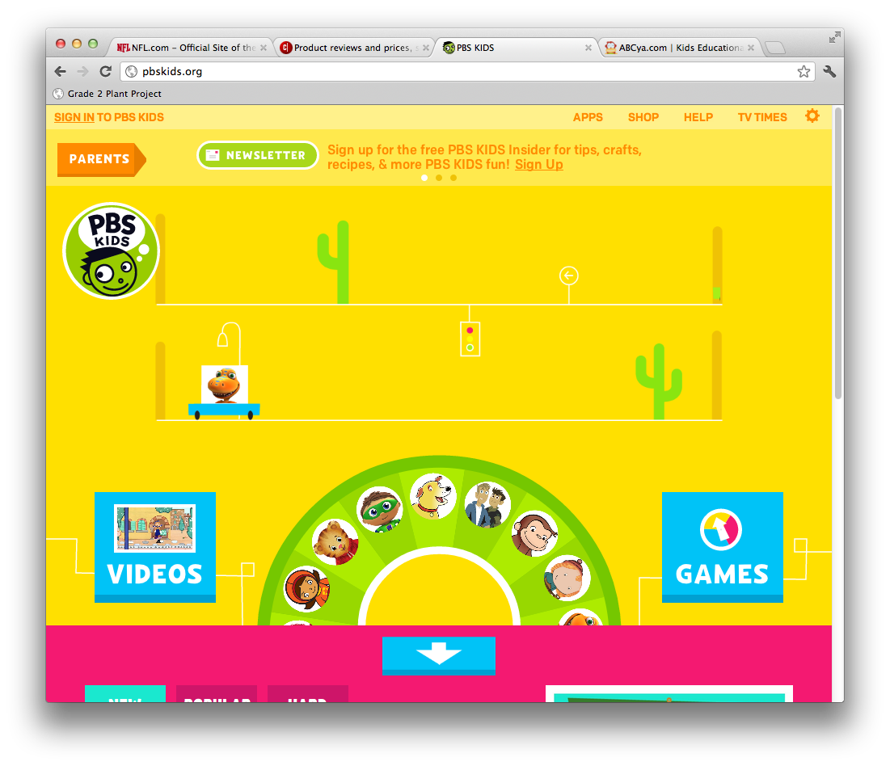
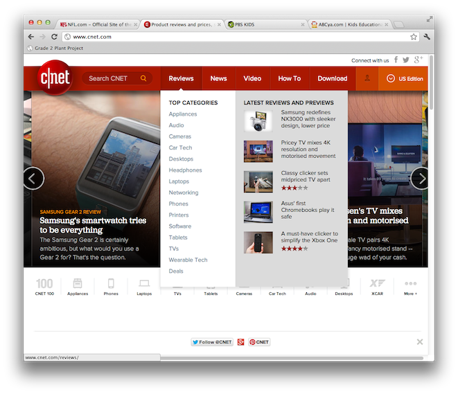

Project Intro
The last Google Tool that we will be learning about this year is Google Sites. Google Sites is not part of Google Docs. It is a seperate tool. Google Sites lets you to make simple websites using your Google Account. Like Google Docs, it can be accessed from any computer, as long as you sign in. Unlike Google Docs, when you make a change, you need to press a button to save it.
Teaching Point
Today we will learn what makes a webiste easy to use.
Getting Organized
A good website is makes it easy to learn about a topic, because the way that it is put together makes sense for that topic, and because the links from one topic to another are easy to find. For example, a good website about basketball might have pages about the Rules, The Teams, The History, and the Schedule of when games are played. On a website like that it would be very easy to learn about the topic of basketball. A good website about Dance might have pages about the History of Dance, Famous Dancers, Important Excercises, and what gear or clothing you need to go to dance class. On both sites the links to each of the pages would be in a place that was easy to find when you first got to the page.
   {kind=link}
{kind=link}
{kind=link}
{kind=link}
Today's Assignment
Use the form below to answer questions about a website you choose. It can be a website you know, or you can use Google to find one.
Extension Activity:
Pick a website that you like and write a different way you might choose to organize it. Post your ideas onto your blog.
Back to School Portal